Bork Vikingehavn
Rekonstruierte Wikingersiedlung

13 - Bork Wikingerhafen - Letztes Update 03.08.2025
| Navidaten: 55.83662 8.26616 oder: Vikingevej 7, 6893 Saum |
Bork Wikingermarkt von Freitag, 08. bis Sonntag, 10. August 2025 in Bork Havn - jeweils von 10.00 bis 17.00 Uhr - Eintritt: Erwachsene 165 kr. / Kinder 3-17 Jahre: 50 DKK / Kinder 0-2 Jahre: frei - ein Erlebnis für Jung und Alt.
Bork Havn habe ich im Rahmen meiner 2022er Jütland Wikinger Tour im Juni ausgelassen, da es tatsächlich nichts zur Wikingerzeit zu sehen gibt.
20.12.2024
Zum Vergleich hier mal das neue (von mir zugeschnittene) Luftfoto von der Webseite "Skråfoto" - Aufnahmedatum 01.04.2023 (Download 20.12.2024) - Freie Nutzung unter Beachtung der Lizenz: CC BY 4.0.
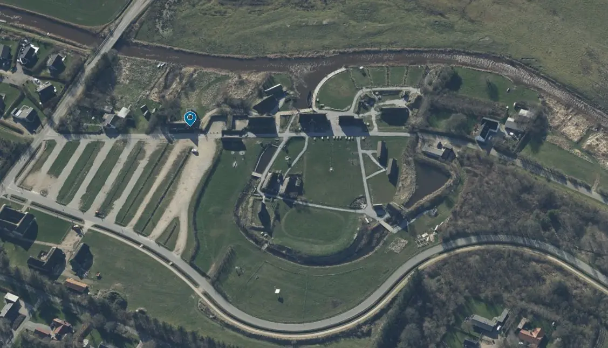
20.12.2021
Dieses Luftfoto ist von der Webseite "Skråfoto" - Aufnahmedatum 24.04.2021 (Download 20.12.2021). Skråfoto ist eine Webanwendung, die von Klimadatastyrelsen weltweit kostenlos bereitgestellt wird - Freie Nutzung unter Beachtung der Lizenz: CC BY 4.0.Über diese Webseite wird nach Eingabe der Anschrift die Örtlichkeit mit mehreren Aufnahmen aus den verschiedenen Himmelsrichtungen wiedergegeben - Luftfoto von mir beschnitten auf "Bork Havn" siehe hier:
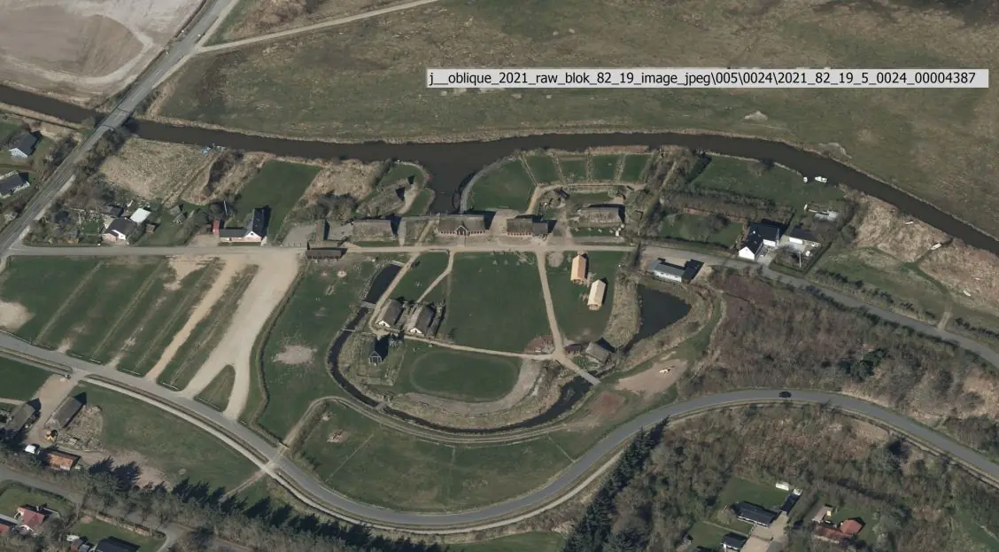
NEU - 21.06.2015
Am 05.06.2015 hatte ich auch mal wieder Zeit mich ausgiebig in Bork Vingehavn umzuschauen. Die Anlage ist inzwischen ganz schön gewachsen und seit meinem letzten Besuch, der viele Jahr zurück liegt, und wurde um etliche Gebäude erweitert. Eine Fotoübersicht mit 41 Aufnahmen dazu findet sich hier.
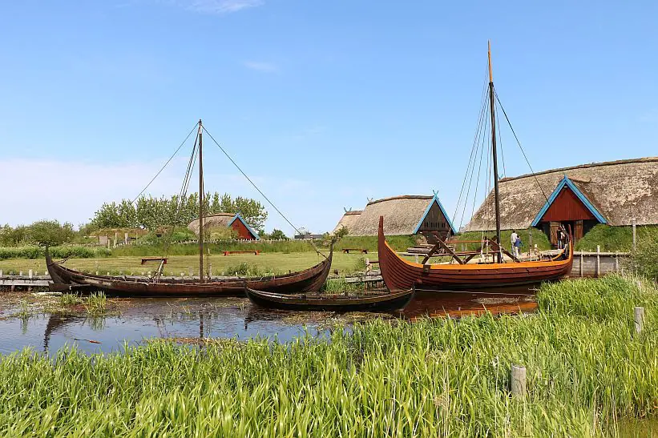
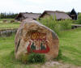 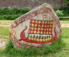 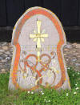 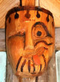 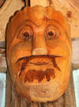 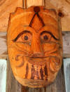 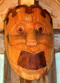


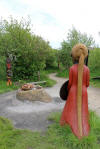 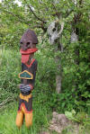 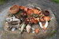 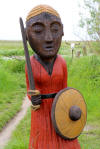


In unmittelbarer Nähe zum reizvollen Ringkøbing Fjord, südlich von Bork Havn, wurde vor wenigen Jahren eines der neueren wikingerzeitlichen Geschichtszentren Dänemarks eingerichtet - Ergänzende Infos in deutscher Sprache.
Es ist inzwischen dem Ringkøbing-Skjern Museum angegliedert. Dieses besteht aus 14 Besuchsstätten rund um den Ringkøbing Fjord, in dem man 2000 Jahre Geschichte erleben kann.
Bork Vingehavn besteht aus einer Reihe von rekonstruierten Gebäuden, einem Marktplatz, einem Opferplatz, einer Schmiede, einer Stabkirche mit separatem Glockenturm, zwei Bootsschuppen und einem Naturhafen. Eines der Gebäude ist als Wohnhaus der Wikingerzeit authentisch eingerichtet worden. Die anderen beinhalten neben dem kleinen Museum mit Kinosaal (Filmvorführungen über die Wikingerzeit in Dänisch - auch mit deutschen Untertiteln) / Kasse/Shop noch ein Sanitärgebäude. In den beiden Bootsschuppen finden die beiden Wikinger-Schiffe Schutz vor der Witterung. Sonst ist zumindest das größere am Landungssteg verankert. Mit diesem werden im Sommer auch Fahrten für Touristen angeboten. Anfang August findet auch immer ein Wikingermarkt statt, bei dem verschiedene Wikingergruppen aus Nah und Fern teilnehmen und dabei ihr Handwerk und ihre Produkte präsentieren.
Das kleine Museum beherbergt keine echten archäologischen Funde und an dieser Stätte befand sich auch nie eine wikingerzeitliche Siedlung. Die Gebäude sind mit Torfwänden ausgeführt, wie man sie aus Island und den Hausfunden in Neufundland/Amerika her kennt.
Ringkøbing-Skjern Museum und darüber die Infos zum Wikingerhafen Bork.
Anschrift:
Bork Vikingehavn - Vikingevej 7 - DK-6893 SaumE-Mail: info@borkvikingehavn.dk
facebook.com/borkvikingehavn - zahlreiche tolle Fotos der Akteure in der belebten Anlage
Öffnungszeiten / Eintrittspreise - hier